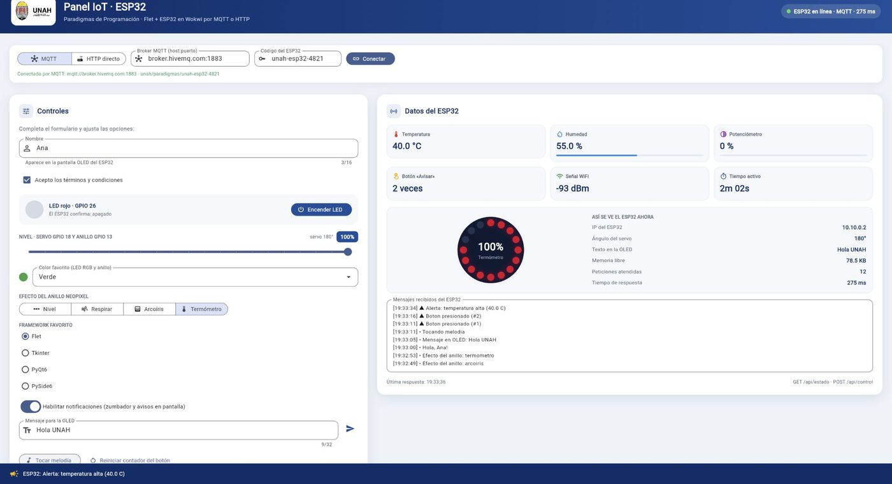
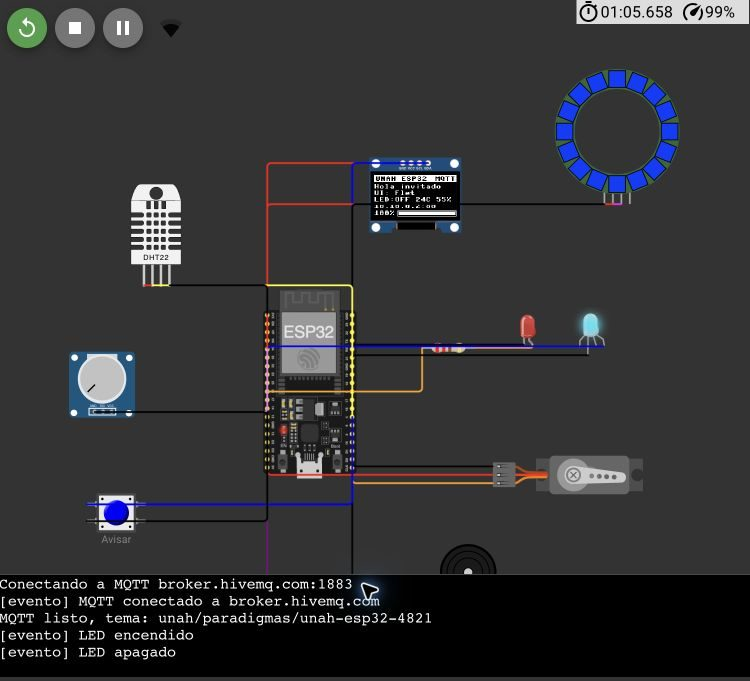
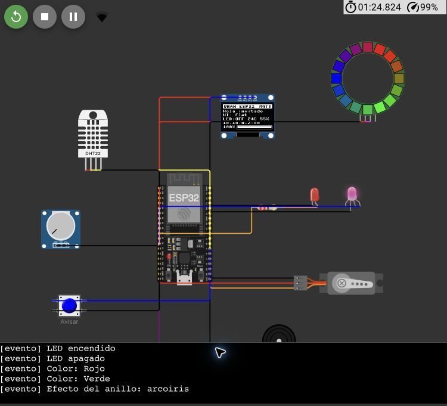
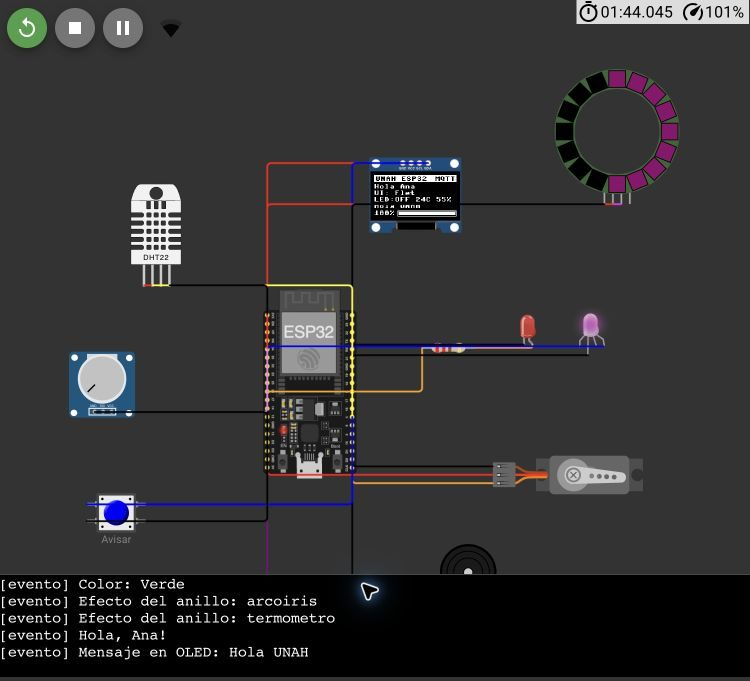
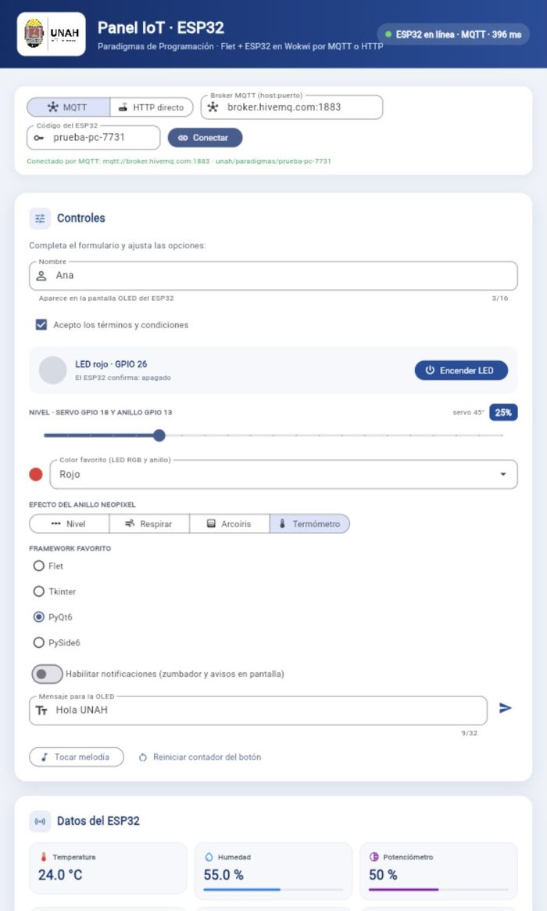

Panel IoT con Flet y un ESP32 simulado en Wokwi: control y monitoreo por MQTT y HTTP
Claudio Rafael Vasquez Lopez, 20192002377
Axel David Cornejo Ortega, 20192030294
Eva Sarahí Membreño Argueta, 20232000863
Brenda Nicole Santiago, 20212030857
Daniel Orlando Fuentes Teruel, 20212020451
José Omar Baca Aguilar, 20172030218
Universidad Nacional Autónoma de Honduras, Paradigmas de Programación
Resumen—Se presenta una aplicación de escritorio y web escrita en Python con el marco Flet que controla un microcontrolador ESP32 simulado en la plataforma Wokwi y muestra en tiempo real las lecturas de sus sensores. La interfaz parte de un formulario de ejemplo (campo de texto, casilla, control deslizante, lista desplegable, opciones excluyentes e interruptor) y asigna a cada elemento una acción física: encender un LED, mover un servomotor, fijar el color de un LED RGB y de un anillo de 16 LEDs direccionables, escribir en una pantalla OLED y activar un zumbador. El firmware, escrito en MicroPython, atiende de forma concurrente un servidor web propio y un cliente de mensajería por publicación y suscripción, y ambos canales comparten el mismo formato de mensajes. Como el simulador gratuito sólo admite conexiones salientes desde el microcontrolador, la comunicación por publicación y suscripción a través de un intermediario público resultó la vía viable sin costo. Las pruebas de extremo a extremo sobre el simulador confirmaron el funcionamiento de todos los controles y de todas las lecturas, con un tiempo aproximado de 0,6 s desde la interfaz hasta el simulador y de 1,1 s en sentido inverso, además de la detección de desconexión en menos de 6 s y la reconexión automática.
Palabras clave— Internet de las cosas, MicroPython, interfaces gráficas de usuario.
I. Introducción
Las interfaces gráficas que controlan dispositivos físicos reúnen en un mismo programa varios de los paradigmas estudiados en el curso: la programación orientada a eventos, que gobierna la interfaz; la orientada a objetos, que organiza los componentes; y la concurrente, que permite atender la red y el hardware al mismo tiempo. Este trabajo aplica esos paradigmas a un caso concreto: una aplicación en Flet [1] que se comunica con un ESP32 programado en MicroPython [2] y simulado en Wokwi [3].
El punto de partida fue un fragmento de referencia que conecta el ESP32 a la red inalámbrica del simulador (Wokwi-GUEST) y consulta una API pública con la biblioteca urequests. A partir de él se pidió que el ESP32 actuara como servidor web y que la aplicación permitiera encender un LED, enviar el valor de un control deslizante y recibir información del microcontrolador para mostrarla en un cuadro de texto, con una estética mejorada y el logotipo de la universidad.
Los aportes del trabajo son tres: un firmware que ofrece el mismo protocolo por HTTP y por MQTT [4]; una capa de conexión en la aplicación que abstrae ambos transportes detrás de una misma interfaz; y una herramienta que ejecuta el firmware sin modificaciones en una computadora, lo que permitió probar la aplicación sin depender del simulador. La sección II describe los materiales y la arquitectura; la sección III, los resultados de las pruebas; la sección IV discute las decisiones y limitaciones; y la sección V presenta las conclusiones. Los apéndices contienen el formato de los mensajes, fragmentos del código, las instrucciones de ejecución y la estructura del repositorio. El código fuente completo está disponible en [9].
II. Materiales y métodos
A. Plataforma de simulación y circuito
Se utilizó una placa ESP32 DevKit C v4 en Wokwi con el intérprete MicroPython 1.22. El circuito, definido en el archivo diagram.json, conecta los componentes de la Tabla I. Los actuadores representan las acciones pedidas desde la interfaz y los sensores aportan los datos que la aplicación debe mostrar; el anillo de LEDs direccionables se agregó para visualizar el valor del control deslizante y algunos efectos de color.
Tabla I
Componentes del circuito y su función
| Componente | Pin del ESP32 | Función en el sistema |
|---|---|---|
| LED rojo con resistencia de 220 Ω | GPIO 26 | Botón «Encender LED» |
| LED RGB de cátodo común | GPIO 25, 33, 32 | Color elegido en la lista desplegable |
| Servomotor | GPIO 18 | Control deslizante, de 0 a 180° |
| Anillo de 16 LEDs direccionables (NeoPixel) | GPIO 13 | Nivel del control deslizante y efectos |
| Pantalla OLED SSD1306 (I²C) | GPIO 21, 22 | Nombre, opción elegida y mensajes |
| Zumbador | GPIO 27 | Notificaciones y melodía |
| Sensor DHT22 | GPIO 15 | Temperatura y humedad |
| Potenciómetro | GPIO 34 (ADC) | Lectura analógica de 0 a 100 % |
| Pulsador «Avisar» | GPIO 4 | Evento que genera un aviso en la interfaz |
B. Restricción de red y arquitectura de comunicación
En el simulador web, el ESP32 accede a internet mediante una pasarela pública que sólo permite conexiones salientes. Para alcanzar un servidor que corre en el ESP32 desde la computadora del usuario, la documentación de Wokwi indica que se requiere la pasarela privada (Private IoT Gateway), disponible únicamente en los planes de pago [3], [5]. Por esa razón el firmware implementa dos transportes con el mismo contenido (Fig. 1):
- MQTT: el ESP32 y la aplicación se conectan, ambos hacia afuera, a un intermediario (broker) público [6]. El ESP32 publica su estado cada segundo y recibe los comandos por un tema de control. La aplicación usa la biblioteca paho-mqtt [8] y el ESP32, el módulo
umqtt.simpleincluido en MicroPython. - HTTP directo: el ESP32 actúa como servidor web en el puerto 80. Esta vía cumple el planteamiento original y funciona con la pasarela privada o con una placa física en la misma red.
C. Protocolo de mensajes
Los mensajes se codifican en JSON. Un comando contiene sólo los campos que el usuario modificó (por ejemplo, {"led": true, "nivel": 75}) y un estado reúne las lecturas de los sensores, el valor actual de cada salida, los colores del anillo y los eventos recientes. Cada evento lleva un identificador creciente, de modo que la aplicación muestra sólo los que no ha visto y detecta un reinicio del ESP32 cuando los identificadores vuelven a empezar. La Tabla II resume los temas MQTT, todos bajo el prefijo unah/paradigmas/<código>, donde el código permite que varios usuarios compartan el intermediario público sin mezclar mensajes. El formato completo aparece en el Apéndice A.
Tabla II
Temas MQTT del sistema
| Tema | Publica | Contenido |
|---|---|---|
…/estado | ESP32, cada segundo y tras cada comando; mensaje retenido | Estado completo (≈1,1 KB) |
…/control | Aplicación | Comando con los cambios pedidos |
…/conexion | ESP32 al conectarse; el broker, como última voluntad | online u offline |
D. Firmware del ESP32
El firmware se organiza en tareas cooperativas de asyncio que comparten un único núcleo: el servidor HTTP, el cliente MQTT, la lectura de sensores cada 2 s, la animación del anillo cada 80 ms y el refresco de la pantalla cada 250 ms. La función aplicar valida cada comando antes de usarlo: limita los valores numéricos a su rango, rechaza efectos y opciones desconocidos y descarta los mensajes que no son JSON válido sin detener el programa. El pulsador se atiende por interrupción con un filtro antirrebote de 250 ms, y la tarea de sensores convierte cada pulsación en un evento. Cuando la temperatura supera 35 °C se registra una alerta, que se cancela al bajar de 34 °C para evitar avisos repetidos.
El cliente MQTT declara una última voluntad (last will) en el tema de conexión con el valor offline. Si la simulación se detiene sin cerrar la conexión, el intermediario publica ese valor cuando vence el intervalo de mantenimiento (keepalive), fijado en 15 s.
E. Aplicación en Flet
La interfaz conserva los seis elementos del formulario de ejemplo y añade los necesarios para las nuevas funciones (Fig. 2). Se emplearon los colores institucionales, el logotipo de la universidad en el encabezado y un indicador de conexión con la latencia. La Tabla III relaciona cada control con su efecto.

Tabla III
Controles de la interfaz y efecto en el ESP32
| Control (tipo en Flet) | Efecto |
|---|---|
Nombre (TextField) | Saludo en la pantalla OLED |
Acepto los términos (Checkbox) | Sólo en la interfaz: habilita o bloquea los demás controles |
Encender LED (FilledButton) | Enciende o apaga el LED; el ESP32 confirma el estado real |
Nivel (Slider) | Ángulo del servomotor (0–180°) y LEDs encendidos del anillo (0–16) |
Color favorito (Dropdown) | Color del LED RGB y del anillo |
Efecto del anillo (SegmentedButton) | Nivel, respiración, arcoíris o termómetro |
Framework favorito (RadioGroup) | Texto en la pantalla OLED |
Notificaciones (Switch) | Pitidos del zumbador y avisos en la interfaz |
Mensaje para la OLED (TextField) | Texto libre; se desplaza si excede 16 caracteres |
| Tocar melodía / Reiniciar contador (botones) | Melodía en el zumbador / contador del pulsador en cero |
Del ESP32 se reciben nueve datos: temperatura, humedad, potenciómetro, pulsaciones, intensidad de la señal inalámbrica, tiempo activo, memoria libre, ángulo del servomotor y colores del anillo. Los eventos se muestran en el cuadro de texto «Mensajes recibidos del ESP32».
F. Paradigmas de programación aplicados
Orientación a objetos. La clase base Conexion concentra la cola de cambios pendientes y el filtrado de eventos; las subclases ConexionMQTT y ConexionHTTP sólo redefinen el método sincronizar. La interfaz usa cualquiera de las dos sin distinguirlas, un caso directo de polimorfismo.
Programación orientada a eventos. Cada control de Flet registra un manejador (on_change, on_click, on_select). En el firmware, el pulsador usa una interrupción y el cliente MQTT un manejador que se ejecuta al recibir un mensaje.
Concurrencia. Flet ejecuta los manejadores síncronos en hilos distintos del ciclo principal, por lo que la cola de cambios se protege con un cerrojo (threading.Lock). Al arrastrar el control deslizante se generan decenas de eventos por segundo; la cola conserva sólo el último valor de cada campo y el ciclo de sincronización los envía juntos, lo que evita saturar al microcontrolador. Si un envío falla por la red, los cambios se reintentan sin sobrescribir otros más recientes y sin repetir acciones como la melodía.
La sincronización opera en ambos sentidos: la interfaz adopta el estado que informa el ESP32, de modo que un cambio hecho desde otra fuente también se refleja. Para que una respuesta atrasada no revierta un control que el usuario acaba de mover, durante 2 s se ignora lo que el ESP32 informe sobre ese control.
G. Método de verificación
La verificación se hizo en tres niveles. Primero, doce pruebas automáticas con pytest sobre la capa de conexión, con intermediarios y servidores simulados en memoria. Segundo, el firmware se ejecutó sin modificaciones en la computadora mediante tools/esp32_en_pc.py, que sustituye los módulos de MicroPython (machine, network, dht, neopixel, framebuf y umqtt) por imitaciones y permite simular el pulsador, el sensor y el potenciómetro desde la terminal. Tercero, se probó de extremo a extremo en el navegador con el simulador de Wokwi en ejecución y el intermediario público broker.hivemq.com.
III. Resultados
A. Pruebas funcionales
La Tabla IV resume las pruebas realizadas sobre el simulador. Todas se completaron con el resultado esperado y el monitor serial no registró errores de MicroPython. La Fig. 3 muestra tres de los estados verificados en el circuito.
Tabla IV
Pruebas de extremo a extremo en Wokwi por MQTT
| Prueba | Resultado observado |
|---|---|
| Arranque del firmware | Conexión inalámbrica, servidor web y cliente MQTT sin errores |
| Encender y apagar el LED | El LED del simulador cambia y el ESP32 confirma el estado |
| Control deslizante en 0, 50 y 100 | Servomotor en 0°, 90° y 180°; anillo con 0, 8 y 16 LEDs |
| Colores rojo y verde | Cambian el LED RGB y el anillo |
| Efectos arcoíris y termómetro | Animación correcta en el anillo |
| Nombre y mensaje | «Hola Ana» y «Hola UNAH» visibles en la OLED |
| Melodía | Evento registrado en el monitor serial |
| Pulsador «Avisar» (dos pulsaciones) | Contador, cuadro de mensajes y aviso en la interfaz |
| DHT22 en 40 °C | Lectura, alerta de temperatura alta y aviso |
| Potenciómetro en 20 % | La interfaz muestra 20 % |
| Simulación detenida | La interfaz indica «sin conexión» |
| Simulación reiniciada | Reconexión automática y cuadro de mensajes reiniciado |
| Código o intermediario incorrecto | Mensaje que indica qué revisar |



B. Tiempos de respuesta
La Tabla V reúne los tiempos medidos. Los dos primeros se tomaron con un reloj desde la acción hasta que el cambio era visible e incluyen la automatización del navegador, por lo que son cotas superiores. La diferencia entre el intermediario público y uno local muestra que la mayor parte de la latencia proviene del viaje a internet y no del firmware. La aplicación considera desconectado al ESP32 cuando pasan 5 s sin recibir su estado, de ahí el tiempo de detección.
Tabla V
Tiempos medidos
| Medición | Entorno | Tiempo |
|---|---|---|
| Clic en «Encender LED» hasta el evento en el simulador | Wokwi, MQTT público | 0,59 s |
| Potenciómetro en el simulador hasta la interfaz | Wokwi, MQTT público | 1,06 s |
| Ida y vuelta de un comando | Firmware en la PC, MQTT público | ≈0,30 s |
| Ida y vuelta de un comando | Firmware en la PC, Mosquitto local | 0,032 s |
| Ida y vuelta de un comando | Firmware en la PC, HTTP directo | ≈0,005 s |
| Simulación detenida hasta «sin conexión» | Wokwi, MQTT público | 5,74 s |
| Simulación reiniciada hasta «en línea» | Wokwi, MQTT público | 11,11 s |
C. Pruebas automáticas y adaptación de la interfaz
Las doce pruebas automáticas se aprobaron. Cubren la agrupación de cambios en un solo envío, el reintento sin repetir acciones, la detección de reinicio del ESP32, la eliminación de eventos duplicados, el rechazo de un estado retenido antiguo como señal de conexión y los casos de intermediario caído o ESP32 sin publicar. En una ventana de 600 px de ancho la barra de conexión y las tarjetas se reacomodan sin recortar controles (Fig. 4).

IV. Discusión
El planteamiento inicial pedía que el ESP32 fuera el servidor web. El firmware lo cumple, pero en el simulador gratuito ese servidor no es accesible desde la computadora. MQTT resolvió la restricción porque invierte el sentido de las conexiones: el microcontrolador ya no espera clientes, sino que se conecta a un intermediario. El costo es que el servidor pasa a ser el intermediario y que la latencia aumenta por el viaje a internet, aunque en las pruebas los tiempos de la Tabla V, de 1,1 s o menos, permitieron operar el LED y el servomotor de forma interactiva. Mantener ambos transportes con el mismo protocolo permitió conservar el servidor web sin duplicar la lógica de la interfaz.
Se evaluó también exponer un intermediario Mosquitto propio mediante un túnel TCP de ngrok. La configuración quedó preparada y se probó en local, pero el plan gratuito de ngrok exige registrar una tarjeta para los túneles TCP y asigna una dirección aleatoria a cada túnel [7], lo que obliga a editar el firmware cada vez que se vuelve a abrir.
Entre las limitaciones se cuentan: el intermediario público permite que cualquiera que conozca el tema lea o envíe mensajes, lo que se mitiga, sin eliminarse, con un código propio; el aviso de última voluntad depende del intervalo de mantenimiento, por lo que la interfaz también detecta la desconexión por ausencia de mensajes; y en el modo web, Flet registra un error interno de WebSocket al recargar la página, sin efecto sobre el funcionamiento.
V. Conclusiones y trabajo futuro
Se desarrolló una aplicación en Flet que controla y monitorea un ESP32 simulado en Wokwi, con todas las funciones verificadas de extremo a extremo. La separación entre la interfaz y la capa de conexión, junto con un protocolo único para HTTP y MQTT, permitió adaptarse a la restricción de red del simulador sin rehacer la interfaz. La ejecución del firmware en la computadora con módulos imitados resultó útil para depurar sin depender del simulador.
Como trabajo futuro se propone usar un intermediario privado con usuario, contraseña y cifrado TLS; probar el firmware en una placa física, donde el modo HTTP directo funciona en la red local; y almacenar el historial de lecturas para graficarlo en la interfaz.
Apéndice A. Formato de los mensajes
Un comando contiene sólo los campos que cambian. Los valores admitidos de efecto son fijo, respirar, arcoiris y termometro; los de accion, melodia, pitido y reiniciar_contador.
{
"led": true, "nivel": 75, "color": "Rojo", "rgb": [255, 0, 0],
"efecto": "arcoiris", "nombre": "Ana", "framework": "PyQt6",
"notificaciones": true, "mensaje": "Hola UNAH", "accion": "melodia"
}
Estado publicado por el ESP32 (abreviado):
{
"dispositivo": "ESP32 UNAH", "ip": "10.10.0.2", "tiempo_activo": 142,
"memoria_libre": 80384, "peticiones": 12, "mqtt": true, "rssi": -75,
"sensores": {"temperatura": 40.0, "humedad": 55.0, "potenciometro": 20, "pulsaciones": 2},
"salidas": {"led": false, "nivel": 100, "color": "Verde", "rgb": [0, 255, 0],
"efecto": "termometro", "nombre": "Ana", "framework": "Flet",
"notificaciones": true, "mensaje": "Hola UNAH"},
"servo_grados": 180,
"anillo": ["#d4002a", "#d4002a", ..., "#000000"],
"eventos": [{"id": 17, "t": 120, "tipo": "aviso",
"texto": "Alerta: temperatura alta (40.0 C)"}],
"ultimo_evento": 17
}
Por HTTP, POST /api/control?desde=N recibe el comando y responde el estado; GET /api/estado?desde=N devuelve el estado con los eventos cuyo identificador es mayor que N. Un JSON inválido produce una respuesta 400 y una ruta desconocida, 404.
Apéndice B. Fragmentos del código
Los fragmentos están simplificados; el código completo se encuentra en el repositorio [9] (Apéndice D).
B.1. Tarea MQTT del firmware (wokwi/main.py)
async def tarea_mqtt():
id_cliente = "esp32-" + binascii.hexlify(unique_id()).decode()
while True:
try:
cliente = MQTTClient(id_cliente, MQTT_BROKER, port=MQTT_PUERTO, keepalive=15)
cliente.set_callback(al_recibir)
cliente.set_last_will(TEMA + "/conexion", b"offline", retain=True)
cliente.connect()
cliente.subscribe(TEMA + "/control")
cliente.publish(TEMA + "/conexion", b"online", retain=True)
while True:
cliente.check_msg() # ¿llegó un comando?
if publicar_ya or paso_un_segundo:
datos = json.dumps(estado(ultimo_id - 10))
cliente.publish(TEMA + "/estado", datos.encode(), retain=True)
await asyncio.sleep_ms(50) # cede el turno a las demás tareas
except Exception:
await asyncio.sleep(3) # reintenta la conexión
B.2. Validación de comandos en el firmware (extracto)
def aplicar(cambios):
errores = []
if "led" in cambios:
nuevo = bool(cambios["led"])
if nuevo != salidas["led"]:
salidas["led"] = nuevo
registrar("LED " + ("encendido" if nuevo else "apagado"))
pitar()
if "nivel" in cambios:
salidas["nivel"] = a_entero(cambios["nivel"], 0, 100) # se limita al rango
if "efecto" in cambios and cambios["efecto"] not in EFECTOS:
errores.append("efecto desconocido")
...
led.value(1 if salidas["led"] else 0)
mover_servo(salidas["nivel"])
return errores
B.3. Polimorfismo en la capa de conexión (src/esp32.py)
class Conexion:
def pedir(self, **cambios): # lo invocan los manejadores de Flet
with self._lock:
self._pendientes.update(cambios)
async def sincronizar(self) -> dict: # cada subclase define el transporte
raise NotImplementedError
class ConexionMQTT(Conexion):
async def sincronizar(self):
cambios = self._tomar_pendientes()
if cambios:
self._mqtt.publish(self.tema + "/control", json.dumps(cambios))
return self._filtrar_eventos(dict(self._estado))
class ConexionHTTP(Conexion):
async def sincronizar(self):
cambios = self._tomar_pendientes()
respuesta = await self._http.post(f"{self.url}/api/control", json=cambios)
return self._filtrar_eventos(respuesta.json())
Apéndice C. Instrucciones de ejecución
- En Wokwi, crear un proyecto ESP32 con MicroPython y reemplazar
main.pyydiagram.jsonpor los archivos de la carpetawokwi/. Al iniciar la simulación, el monitor serial debe mostrarMQTT listo, tema: unah/paradigmas/unah-esp32-4821. - En la computadora, dentro del proyecto, ejecutar
uv run flet runpara la aplicación de escritorio ouv run flet run --webpara el navegador. - En la barra de conexión elegir MQTT, con el intermediario
broker.hivemq.com:1883y el mismo código que la constanteCODIGOdel firmware. Aceptar los términos y usar los controles. - Sin Wokwi:
uv run python tools/esp32_en_pc.pyejecuta el firmware en la computadora. En esa terminal, las órdenesboton,temp 38,hum 70ypot 25simulan el hardware. - Pruebas automáticas:
uv run pytest.
Apéndice D. Estructura del repositorio
El proyecto se publica en GitHub [9]. La Tabla VI describe los archivos principales.
Tabla VI
Archivos del repositorio
| Archivo | Contenido |
|---|---|
wokwi/main.py | Firmware MicroPython: red, servidor HTTP, cliente MQTT, sensores, anillo, OLED y sonido |
wokwi/diagram.json | Circuito de Wokwi |
src/main.py | Interfaz en Flet y ciclo de sincronización |
src/esp32.py | Capa de conexión: Conexion, ConexionMQTT y ConexionHTTP |
tools/esp32_en_pc.py | Ejecución del firmware en la computadora con módulos imitados |
tools/mosquitto.conf | Configuración de un intermediario Mosquitto propio |
tests/test_main.py | Doce pruebas automáticas de la capa de conexión |
Referencias
- [1]Flet, «Flet documentation». [En línea]. Disponible: https://flet.dev/docs/. [Accedido: 20-oct-2026].
- [2]MicroPython, «MicroPython documentation, v1.22». [En línea]. Disponible: https://docs.micropython.org/en/v1.22.0/. [Accedido: 20-oct-2026].
- [3]Wokwi, «ESP32 WiFi Networking». [En línea]. Disponible: https://docs.wokwi.com/guides/esp32-wifi. [Accedido: 20-oct-2026].
- [4]A. Banks y R. Gupta, Eds., «MQTT Version 3.1.1», OASIS Standard, oct. 2014. [En línea]. Disponible: https://docs.oasis-open.org/mqtt/mqtt/v3.1.1/mqtt-v3.1.1.html.
- [5]Wokwi, «Pricing». [En línea]. Disponible: https://wokwi.com/pricing. [Accedido: 20-oct-2026].
- [6]HiveMQ, «Public MQTT Broker». [En línea]. Disponible: https://www.hivemq.com/mqtt/public-mqtt-broker/. [Accedido: 20-oct-2026].
- [7]ngrok, «TCP Agent Endpoints». [En línea]. Disponible: https://ngrok.com/docs/universal-gateway/tcp/. [Accedido: 20-oct-2026].
- [8]Eclipse Foundation, «paho-mqtt». [En línea]. Disponible: https://pypi.org/project/paho-mqtt/. [Accedido: 20-oct-2026].
- [9]C. R. Vasquez Lopez, A. D. Cornejo Ortega, E. S. Membreño Argueta, B. N. Santiago, D. O. Fuentes Teruel y J. O. Baca Aguilar, «Panel IoT con Flet y un ESP32 simulado en Wokwi», repositorio de GitHub, 2026. [En línea]. Disponible: https://github.com/crafael23/paradigmas-trabajo-13-10.